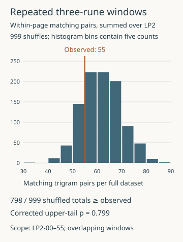
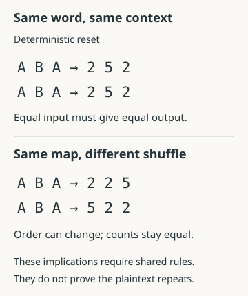

Reproduce your first experiment
Read a completed test, inspect its chart and files, and distinguish a passing rerun from a positive finding.
On this page
Start with repeated trigrams against page shuffles. A trigram is a window of three consecutive runes. The experiment asks whether the archived LP2 pages have more matching pairs of these windows than shuffled versions with the same rune counts. It measures a property of the text; it does not attempt to decode it.

Read the record before running it
- Read the question and scope. This test uses LP2-00–55, includes headings, removes separators, and permits overlapping windows. It compares windows within each page, never between pages. Those choices define what was tested.
- Read the finding beside its limit. The observation is 55 matching pairs. In 999 simulated datasets, 798 totals are at least that large. The corrected upper-tail p-value is 0.799, so the test does not show an excess under this model. That is not proof that the pages are random.
- Open the full account. Its small examples explain why three occurrences of one pattern give three matching pairs. Its shuffle description states exactly what the comparison preserves and destroys.
- Inspect a file. Download the per-page CSV. LP2-31 has 269 runes, 267 windows and zero matching trigram pairs. LP2-50 remains present with zero runes. These are descriptive page counts, not separate significance tests.
Reproduce the result
If you have Python, download this experiment's reproduction files and extract them into an empty folder, preserving the directories. Open a terminal in that folder. Verify the included files, then run the experiment and its independent checker:
python scripts/verify_bundle.py EXPERIMENT-lp2-trigram-repeats-CONTENTS.json
python experiments/records/lp2-trigram-repeats/run.py --check
python experiments/records/lp2-trigram-repeats/check.pyThe verification command should report 0 problems. The recorded simulation used Python 3.12.10. The runner should report that all observed repeats and 999 complete-dataset shuffles reproduce, followed by "observed_total": 55, "exceedances": 798, "monte_carlo_p": 0.799 and "below_threshold": false. The final command checks the observations with a different counting approach and audits the saved comparison. See setup instructions if your terminal uses py or python3 instead. This experiment needs no original JPEGs or external Python packages.
Report what passed
A passing rerun means the published calculation was reproduced. It does not mean the hypothesis was supported: in this case, the result is a lack of evidence for the specified excess. Keep that distinction when reporting your own work. Changing the window length, removing headings or comparing across pages creates a different test and needs a declared plan.
What kind of result are you reading?
The registry groups related methods into families, but its records do not all answer the same kind of question. Before interpreting an outcome label, read the question it belongs to:
| Kind of check | Example | What the result establishes |
|---|---|---|
| Arithmetic audit | Mixed-square candidate words | Sixteen supplied totals are achievable under the declared rune-label rules. This does not establish that a word is a key or that a number has only one word equivalent. |
| Descriptive extraction | N-rune distances | Records the labels produced by four fixed distance/boundary configurations. Keeping unmatched gaps visible prevents a selected fragment from appearing to be a complete reading. |
| Statistical comparison | Repeated trigrams | Compares one specified count with a declared shuffle model. A result that is ordinary under that model does not prove the text random. |
| Exact mathematical exclusion | Direct polynomial streams | A finite-difference obstruction excludes every modulus greater than one for the defined direct-output rule through degree eight. It does not cover polynomial keys mixed with unknown plaintext. |
| Necessary model constraint | Word-local repetition | Distinct ciphertext units require distinct corresponding plaintext units under one shared deterministic word function and context. This does not establish that the unknown plaintext repeats, so it does not by itself reject the model. |
| Bounded cipher search | Fibonacci shifts | No tested configuration matched any of nine fixed 12-rune openings. This excludes those exact matches within the stated bounds, not every Fibonacci-based cipher. |
| Tool and payload check | Default-key OutGuess sweep | Distinguishes reproduced payloads, unverified output bytes, rejected retrievals and abnormal exits. An abnormal exit is not evidence that an image has no payload. |
| Historical control | Emerson book cipher | Reproduces the documented historical string with fixed source and counting conventions. It does not establish that the same book or method decrypts another page. |
Would your search recognize an answer?
Before interpreting “nothing found,” give the search a problem whose answer you know. A planted control starts with known plaintext, encrypts it under a specified rule, and asks the proposed search to recover it. Keep the plaintext aside for checking; do not let the search use it unless known plaintext is explicitly part of the model. This separates several failures that otherwise look identical.
- Is the answer inside the search? Record whether the true key, generator, offset and alignment are included. An omitted-key control should remain visibly separate from one that includes the true key. The bounded search controls compare both situations rather than treating every missed answer as a scoring failure.
- Can the decoder represent it? Even the correct key can fail when the encoder skips key slots and the decoder assumes uninterrupted addition. The alignment controls retain exact rune recovery separately from score acceptance. The worked alignment guide explains why a wider beam cannot recover a path prohibited by the skip bound.
- Would the scoring rule accept it? Test intact known text before involving a cipher. In the eight-language scorer control, the fixed English model accepts every tested English and French excerpt, but no Finnish or Welsh excerpt. The same failure label can therefore mean “wrong candidate” or “meaningful text this score rejects.” These results apply to the recorded excerpts and preprocessing, not every text in those languages.
- What does choosing the best candidate change? Give each null control the whole search, including its key budget and selection rule. A single wrong-key output is not a control for the winner of thousands of attempts. The search-maximum experiment retains complete searches at five nested dictionary sizes, with all settings fixed.
- Does the candidate predict anything unused? Reserve part of the plaintext for checking after candidate selection. In the known-crib seed controls, two-rune openings admit false matches, including under a wrong generator or incorrect crib. Matching that opening and predicting the withheld remainder are different achievements.
Read the two outcomes separately
| Exact planted plaintext recovered? | Score accepts it? | What to investigate |
|---|---|---|
| Yes | Yes | The pipeline succeeds on this fixture. Test other declared conditions before claiming wider recovery power. |
| Yes | No | The scoring gate rejects the answer. Inspect language, text representation, length and threshold. |
| No | Yes | The score accepts an incorrect output. Inspect the complete sequence; a plausible-looking score is not exact recovery. |
| No | No | Check coverage and decoder behavior before blaming the scorer. The answer may be absent or unreachable. |
This table is available for planted controls because their plaintext is known. For an unsolved manuscript page, the exact-recovery column is unknown. A high score cannot fill it in. Preserve the distinction when reading the experiment figures: acceptance counts and exact-recovery counts measure different things.
Use controls resembling the proposed search in length, symbol conversion, key mechanism, interruption rules and budget. A successful plain-addition control does not validate an unrelated skip-aware decoder. Reusing one fixture to tune settings also makes it development data; reserve other fixtures before tuning if you want a separate check. None of the linked tests establishes a universal false-positive rate or rules out every cipher in its family.
What has actually been ruled out?
The following published results show why “we tried it” needs more than an outcome label. They all use exact calculations, but their conclusions have different logical strength.
A proof can cover parameters that were never enumerated
The polynomial experiment does not loop through a large list of coefficients, origins or moduli. Its argument says that every allowed modulus must divide a particular greatest common divisor. When that gcd is 1, no integer modulus greater than one can work. The program supplies the manuscript-specific integer differences needed by the argument. All 55 nonempty rune pages in LP2-00–55 have this obstruction in both tested representations for every degree bound 1–8.
That is stronger than finding no candidate in a finite coefficient range, but only for the stated rule: the polynomial directly generates the observed rune indices or prime values at a fixed stride. A polynomial generating a key that is then added to unknown plaintext is a different construction. The word “polynomial” alone is not enough to transfer the result.
Compare the fixed alphabet transform search: all 6,496 declared cases completed without matching the specified warning opening. That search has complete coverage of its listed cases, but its success criterion is one particular opening. A different plaintext opening is not contradicted by the result.
A necessary constraint may leave a model possible
The word-reset experiment finds no exact repeats among the selected interior ciphertext tokens. Under one shared deterministic word function with identical key and reset context, equal plaintext units would give equal ciphertext units. Consequently, the corresponding plaintext units must all differ. To turn that constraint into a rejection, you would need an additional justified premise that some of those plaintext units repeat. The experiment does not supply that premise.

A counterexample shows where a conclusion stops
The position-divisor experiment rules out assigning a fixed divisor greater than one to each rune when numbered positions advance by one. Repeated-rune gaps remove the unknown starting position, so trying more starting integers cannot repair the contradiction.
Allow positions to advance by two instead, assign divisor 2 to every rune, and start at 2: every numbered position is even. That satisfies the bare divisibility requirement. It does not tell you which rune to emit and is not a solution. It is a counterexample to the broader claim that the same argument excludes every stride. Extra requirements, such as distinct divisor labels or a deterministic factor-selection rule, must be checked separately.
What the checks have verified
These three newer records include an elementary argument, a calculation on hashed archived inputs, and a second implementation that uses a different computational approach. Their downloadable bundles reproduce those checks without network or AI calls. The two text formats share an archival source, so agreement is not an independent visual review of every manuscript rune.
The supplied research archive also describes formal Lean proofs. These records do not claim to have rerun that formal development. A checked numerical witness, a mathematical argument and a proof-assistant build are different pieces of evidence; only claim the ones actually supplied. Human review remains pending as stated in each record.
Read the outcome with the finding
Supported applies to the record's stated question, not a general theory of Liber Primus. Not supported means the declared test did not support that question under its criteria; it does not necessarily demonstrate impossibility. Inconclusive can include useful, verified arithmetic or partial tool results that do not decide the wider proposal. The finding and limitations explain which situation applies.
Read the record type beside that outcome. A bounded solving test checks one specified decoding or extraction rule. A supported decoder control means the decoder recovered declared known inputs; it says nothing by itself about the unknown LP2 plaintext. A supported manuscript measurement means the specified short-lag comparison held on the named pages; it does not choose between all mechanisms that could suppress adjacent repeats. A supported source audit concerns the artwork, not a rune reading. No published outcome label should be read as a completed decryption of an unsolved page.
A green rerun confirms that the stored result reproduces. It is a separate fact from whether a cipher hypothesis succeeded. A computational review is also separate from human review; each record states its review status.
Does an existing experiment cover your idea?
Suppose your idea is “use Fibonacci on LP2-15.” The existing record includes that page, but the shared keyword and page are only the start of the comparison. Match these four parts:
- Input: which text version, heading treatment, rune order and boundaries?
- Operation: which recurrence, initial values, sign, starting offset and reset rule?
- Bounds: which values were actually enumerated, including exceptions and skipped positions?
- Success criterion: the same fixed opening, a different crib, a whole-page language score, or another declared measurement?
A rule that restarts the sequence at each word is not covered by an uninterrupted-shift result. Neither is a different recurrence merely because both are called “Fibonacci.” Keep such a change as an explicit variant, linking the baseline and stating exactly what differs. If the operation is identical but the desired plaintext criterion changes, the old candidate outputs may be reusable, but the new evaluation is still a separate analysis.
Use Have we tried it? to find relevant records, then compare their full scopes. A retrieved match is a lead to inspect, not a verdict that an idea has been exhausted. No result means no matching documented experiment was found. See search space and bounds for counting configurations and candidate readings for judging proposed plaintext.
Plan a follow-up
Begin with documenting a reproducible attempt. If your proposed change only affects a few variables, use the existing experiment as a baseline and record exactly what changes. Keep the previous finding available. For how to interpret a candidate decryption rather than a descriptive measurement, see evaluating candidate readings.